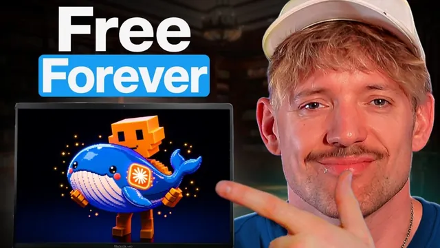

DeepSeek Harness, 0원짜리 클로드 코드

원본 영상 보기 →
- 하네스와 모델은 분리해서 사고해야 해요
- 프론티어 모델과 워크하스 모델을 나눠 쓰는 전략이 필요해요
- Zapier 같은 인증 허브로 여러 AI 도구를 한 번에 업무 도구화할 수 있어요
한 줄 요약
DeepSeek이 만든 무료 오픈소스 코딩 하네스(harness)가 Claude Code와 맞먹는 구조로 170,000개의 스타를 받으며 급성장했어요. 이 영상은 그 하네스를 설치해서 어떤 모델이든 $0로 연결해 쓰는 방법과, 언제 Claude 대신 이걸 써야 하는지를 보여줍니다.
전체 내용 정리
모델은 "뇌", 하네스는 "몸" — DeepSeek 하네스가 왜 화제일까요
DeepSeek이 가장 빠르게 성장한 깃허브 레포로 떠오른 이유는 새 모델이 아니라 새로운 "하네스" 때문이에요.
하네스는 모델(뇌)을 감싸는 실행 환경(몸)입니다. Claude에게 Claude Code가 있듯, DeepSeek에도 이번에 무료 하네스가 생겼다는 게 핵심이죠.
출시 얼마 되지 않아 약 17만 개의 스타를 받았고, MIT 라이선스라 사실상 완전히 자유롭게 가져다 쓸 수 있어요. 플러그인·챗 도구·UI는 물론 하네스 자체까지도 전부 바꿔치기할 수 있습니다.
이 영상은 이 하네스를 원하는 모델로 실행하는 법뿐 아니라, 이걸 다른 도구들과 연결해서 실제로 뭔가를 만드는 법까지 보여줘요.
왜 신경 써야 할까요 — 모델 자유·수정 자유·비용 $0
첫째, DeepSeek·Claude·ChatGPT 등 어떤 모델이든 그냥 선택해서 바로 바꿔 쓸 수 있어요.
둘째, 하네스 자체가 그냥 코드이기 때문에 원하는 대로 무엇이든 수정할 수 있습니다.
앱은 완전히 무료라 $0로도 언제든 원하는 방식으로 쓸 수 있고, 클라우드가 아니라 로컬 컴퓨터에서 돌아가요. 어떤 커넥터로든 다른 도구와 연결할 수 있고, 이걸 기반으로 자기만의 앱을 키워나갈 수도 있죠.
결국 지향점은 모든 프론티어 모델(Codex, Claude, 이제 DeepSeek까지)을 위한 "하나의 범용 하네스"입니다.
설치 방법 — Claude Code에게 시켜서 레포를 로컬로 가져오기
설치는 생각보다 간단해요. 해당 웹사이트에서 "View on GitHub"를 클릭하거나 깃허브 링크를 복사한 뒤, Claude의 새 채팅창에 "이 깃허브 레포를 다운로드해서 로컬호스트로 열어줘"라고 붙여넣으면 Claude가 알아서 처리해줍니다.
완료되면 새 페이지가 열리는데요. 여기서 모델과 리즈닝 노력(effort) 수준을 선택할 수 있고, 사실상 Claude Code와 똑같이 작동하되 내부는 DeepSeek 하네스로 돌아가요.
기존 Claude Code 모델들도 그대로 쓸 수 있고, 원한다면 OpenRouter의 무료 모델도 붙일 수 있습니다.
하네스로 직접 만들어보기 — 메모리 툴 제작과 커스텀 UI 디자인 예시
하네스에게 "네 자신을 위한 메모리 도구를 만들어줘"라고 시키면, Claude Code처럼 각 단계를 세밀하게 보여주며 작업을 진행해요.
좋은 비유가 나옵니다. Claude가 "미리 조립된 레고 세트"라면, 이 하네스는 "레고 부품 전체"를 주는 셈이라 원하는 대로 재조립할 수 있다는 거예요.
실제로 예시 UI 디자인 이미지를 주고 "이걸 만들어줘"라고 했더니 그대로 구현해냈고, 완성된 UI 품질도 나쁘지 않았다고 언급합니다.
자신의 하네스를 소유한다는 것은 모델을 감싸는 지능 자체를 소유하는 거예요. 그래서 원하는 방향으로 자유롭게 발전시킬 수 있다는 점이 강조됩니다.
DeepSeek의 실제 성능 — Opus·GPT-5.6 대비 한 단계 아래지만 비용은 훨씬 저렴
DeepSeek 모델(V4 Flash 등)을 Opus나 GPT-5.6과 비교하면 성능은 한 단계 아래예요.
하지만 "비용의 극히 일부로 90~95%의 성능을 얻는" 개념으로 접근하면 충분히 매력적입니다.
실제로 "멋진 HTML을 열어서 설명해줘"라고 시켰더니 저장·검색·삭제가 가능한 가벼운 메모리 뷰어를 만들어냈고, 이 결과물에서 GPT-5.6 특유의 디자인 특징이 묻어났다고 언급해요.
Zapier로 실제 업무 도구와 연결하기 — 이메일 초안 작성 데모
하네스를 단순 챗봇이 아니라 실제 업무 도구로 쓰려면 외부 서비스와 연동해야 해요.
Claude에게 "Zapier를 DeepSeek 하네스에 연동해서 이메일 초안 작성을 돕게 해줘"라고 시키면 됩니다. Zapier를 쓰는 이유는 여러 서비스(DeepSeek, Codex, Claude, 그 외 개인 앱들)를 한 번에 인증해서 붙일 수 있는 인증 레이어 역할을 하기 때문이에요. 특히 Outlook 같은 서비스는 다른 방식으로는 쉽게 연결하기 어렵다고 하네요.
연동 후 새 세션을 열고 "내 Gmail에 가서 부다페스트가 얼마나 아름다운 도시인지 나 자신에게 설명하는 이메일 초안을 써줘"라고 시키자, 실제로 스킬 카탈로그에서 도구를 호출해 이메일 초안을 완성했습니다.
4가지 실행 모드와 Claude 대비 언제 이걸 써야 할까요
하네스에는 네 가지 모드가 있어요. 표준 모드(파일 수정 등 기본 코딩 에이전트), PTC 모드(표준 모드 기능 + 코드 모드 SDK로 여러 단계를 하나의 TypeScript 프로그램으로 결합), 미니멀 모드, 크리에이티브 모드(런타임 인스펙션이 포함된 커스텀 에이전트 프리셋 제작용)요. 실제로는 표준 모드만으로도 충분했다고 합니다.
Claude Code(또는 Codex)를 써야 할 때는 결과물이 고객에게 보여지고 완성도가 중요할 때, 웹사이트처럼 좋은 디자인 감각이 내장돼 있어야 할 때예요. Claude는 모델 자체에 더해 하네스 안에 이미 많은 노하우가 녹아있어서, 특정 디자인 작업에서 더 나은 결과를 냅니다.
반대로 DeepSeek 하네스를 써야 할 때는 가격이 중요한 대용량 작업, 새로 나온 모델을 빠르게 시험해보고 싶을 때, 나만의 확장 도구를 직접 만들어보고 싶을 때예요.
프론티어 모델 vs 워크하스 모델이라는 사고방식
전체를 관통하는 프레임이 있어요. "프론티어"(Claude, GPT-5.6 등 최고 성능 모델)와 "워크하스(workhorse)"(가격은 1% 수준이지만 성능은 95%인 모델)를 구분해서 쓰라는 겁니다.
DeepSeek은 워크하스 역할에 맞고, 대량 작업을 빠르게 처리할 때 유용하죠.
다만 아직 초기 단계라 완벽함을 기대하면 안 되고 중간에 오류가 날 수도 있어요. 그리고 하네스 자체는 무료지만 토큰 비용은 별도로 냅니다.
OpenRouter에는 무료 모델을 돌아가며 쓰는 옵션도 있지만, DeepSeek V3 Flash를 고정으로 쓰는 걸 추천한다고 언급해요. OpenRouter 내에서 11조 토큰 이상으로 사용량이 가장 많은 모델이기 때문입니다.
자주 묻는 질문 — 무료인지, 데이터가 중국으로 가는지, 기존 구독으로 쓸 수 있는지
정말 무료냐는 질문에는 MIT 라이선스라 앱 자체는 $0이고 토큰 비용만 낸다고 답해요.
코드가 중국으로 전송되는지에 대해서는, 로컬에서 돌아가고 텔레메트리가 기본적으로 꺼져 있어 그럴 일이 없다고 설명합니다. 걱정되면 로컬 서구권 모델을 쓸 수도 있다고요.
Claude Code나 Codex 구독을 그대로 쓸 수 있냐는 질문에는 안 되고 API 키가 필요하다고 답하며, Ollama 같은 로컬 모델도 완전히 지원된다고 해요.
플러그인 생태계(DeepSeek 플러그인 스토어)도 존재하지만, 본인은 플러그인보다는 직접 설계해서 쓰는 걸 즐긴다고 덧붙입니다.
핵심 인사이트
- 하네스와 모델은 분리해서 사고해야 해요: "뇌(모델)"와 "몸(하네스)"을 나눠 생각하면, 특정 AI 툴에 종속되지 않고 모델을 자유롭게 갈아끼우는 관점을 가질 수 있습니다. 특정 벤더 락인 없이 도구 스택을 설계하려는 분에게 중요한 프레임이죠.
- 프론티어 모델과 워크하스 모델을 나눠 쓰는 전략이 필요해요: 모든 작업에 최고 성능 모델을 쓸 필요는 없잖아요. 대용량·저부가가치 작업은 저렴한 워크하스 모델(DeepSeek 등)로, 클라이언트 대면·고품질 결과물은 Claude 같은 프론티어 모델로 나누면 비용을 크게 아낄 수 있습니다.
- Zapier 같은 인증 허브로 여러 AI 도구를 한 번에 업무 도구화할 수 있어요: AI 하네스 자체보다 이를 이메일, 캘린더 같은 실제 업무 도구와 연결하는 인증 레이어가 실무 활용의 핵심입니다. 한 번 연결해두면 어떤 모델·하네스를 쓰든 동일한 연동을 재사용할 수 있어요.
오늘 당장 해볼 것
- Claude Code 새 채팅창에 "이 깃허브 레포(DeepSeek 하네스)를 다운로드해서 로컬호스트로 열어줘"라고 요청해 무료로 하네스를 설치해보세요.
- 설치한 하네스에서 표준 모드로 "간단한 메모리 도구를 만들어줘" 같은 저부담 작업을 시켜보며 워크하스 모델의 체감 품질을 테스트해보시면 좋아요.
- 반복적이고 대용량인 작업(초안 작성, 대량 정리 등)은 DeepSeek 하네스로, 클라이언트에게 보여줄 결과물은 Claude Code로 나눠서 이번 주 업무에 적용해보세요.